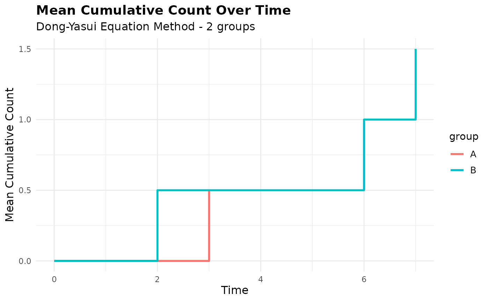
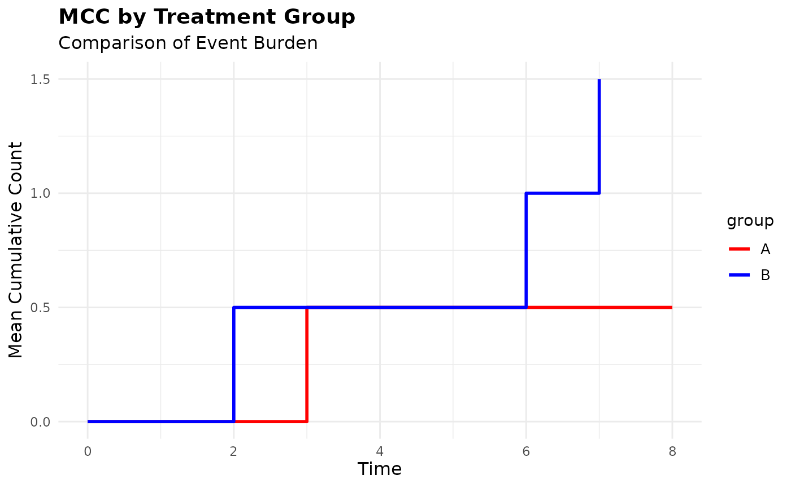
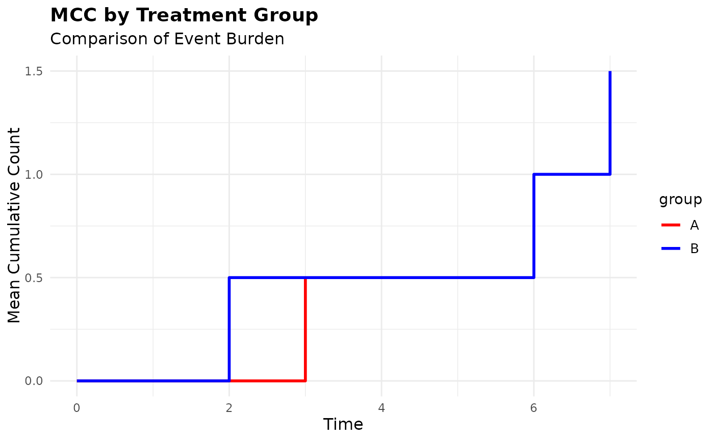
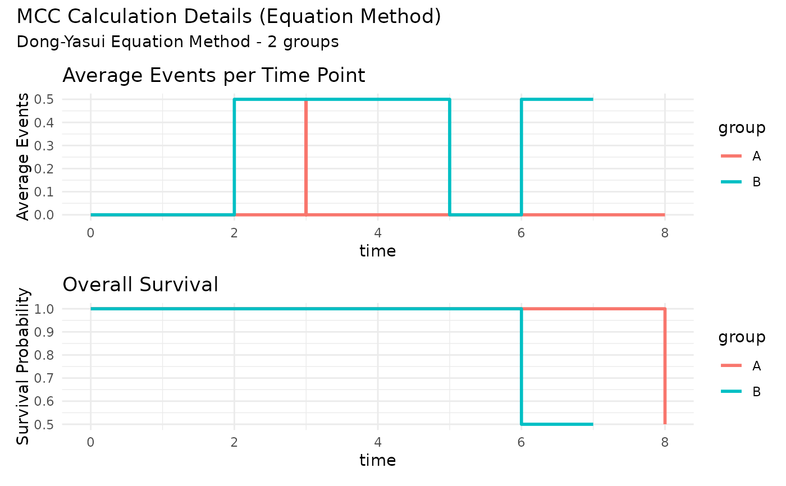
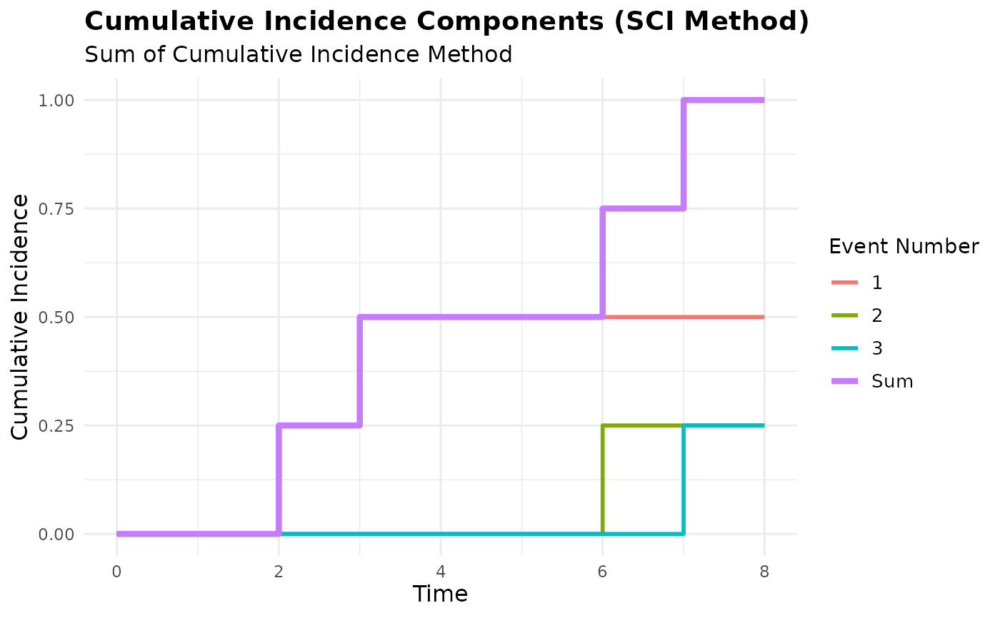

Creates plots for Mean Cumulative Count (MCC) results. The plotting method
automatically adapts based on the mcc object class and whether the analysis
was grouped.
Arguments
- x
An
mccobject- type
Character string specifying plot type:
"mcc" (default): Plot MCC estimates over time
"components": Show individual cumulative incidence components (SCI method only)
- groups
Character vector specifying which groups to include in grouped analyses. If NULL (default), all groups are included
- conf_int
Logical indicating whether to include confidence intervals if available
- colors
Character vector of colors to use for groups. If NULL, uses default colors
- title
Character string for plot title. If NULL, generates automatic title
- subtitle
Character string for plot subtitle. If NULL, generates automatic subtitle
- ...
Additional arguments passed to ggplot2 functions
Examples
# Create sample data
library(dplyr)
df <- data.frame(
id = c(1, 2, 3, 4, 4, 4, 5, 5),
time = c(8, 1, 5, 2, 6, 7, 3, 3),
cause = c(0, 0, 2, 1, 1, 1, 1, 2),
group = c("A", "A", "B", "B", "B", "B", "A", "A")
) |>
arrange(id, time)
# Basic MCC plot (ungrouped)
mcc_result <- mcc(df, "id", "time", "cause")
#> Warning: Found 1 participant where last observation is an event of interest (`cause_var`
#> = 1)
#> ! ID: 4
#> ℹ `mcc()` assumes these participants are censored at their final `time_var`
#> ℹ If participants were actually censored or experienced competing risks after
#> their last event, add those observations to ensure correct estimates
#> ℹ Adjusted time points for events occurring simultaneously for the same subject.
plot(mcc_result)

# Grouped analysis with custom colors
mcc_grouped <- mcc(df, "id", "time", "cause", by = "group")
#> ℹ Adjusted time points for events occurring simultaneously for the same subject.
#> Warning: Found 1 participant where last observation is an event of interest (`cause_var`
#> = 1)
#> ! ID: 4
#> ℹ `mcc()` assumes these participants are censored at their final `time_var`
#> ℹ If participants were actually censored or experienced competing risks after
#> their last event, add those observations to ensure correct estimates
plot(mcc_grouped)

# Customize the grouped plot
plot(mcc_grouped,
colors = c("red", "blue"),
title = "MCC by Treatment Group",
subtitle = "Comparison of Event Burden")

# Plot only specific groups
plot(mcc_grouped, groups = c("A"))

# Compare different methods - equation method only shows MCC
mcc_eq <- mcc(df, "id", "time", "cause", method = "equation")
#> Warning: Found 1 participant where last observation is an event of interest (`cause_var`
#> = 1)
#> ! ID: 4
#> ℹ `mcc()` assumes these participants are censored at their final `time_var`
#> ℹ If participants were actually censored or experienced competing risks after
#> their last event, add those observations to ensure correct estimates
#> ℹ Adjusted time points for events occurring simultaneously for the same subject.
plot(mcc_eq)

# SCI method can show components of cumulative incidence components
mcc_sci <- mcc(df, "id", "time", "cause", method = "sci")
#> Warning: Found 1 participant where last observation is an event of interest (`cause_var`
#> = 1)
#> ! ID: 4
#> ℹ `mcc()` assumes these participants are censored at their final `time_var`
#> ℹ If participants were actually censored or experienced competing risks after
#> their last event, add those observations to ensure correct estimates
#> ℹ Adjusted time points for events occurring simultaneously for the same subject.
plot(mcc_sci) # Shows main MCC plot

plot(mcc_sci, type = "components") # Shows CI components

# Clean up
rm(df, mcc_result, mcc_grouped, mcc_eq, mcc_sci)